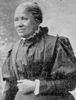

|

|

|
|
|
An advocate of African American civil rights, education, temperance,
abolition and civic morality, poet and author Frances Ellen Watkins
Harper was also a prominent leader of the women's club movement of the
late nineteenth century. Born in Baltimore, Maryland, Frances Watkins
was the only child of free African-American parents. At three years old,
Frances was orphaned and adopted into the family of her uncle, Reverend
William Watkins. Frances attended her uncle's school, where she received
significantly more intellectual training than was common for
African-American children at the time. At fourteen years old, Watkins
began an informal apprenticeship in sewing with a Baltimore man named
Armstrong. Sewing provided an income for Watkins, who taught the craft
at the Union Seminary in Columbus, Ohio, and in Little York,
Pennsylvania. By the time she began teaching in the late 1840s, she had
also achieved her first major success as an author, publishing a
collection of poetry, Forest Leaves (1845).
Although sewing provided an adequate income, teaching became
unnecessary once Watkins began to speak publicly about her strong
anti-slavery sentiments. Her first public comment was a lecture in New
Bedford, Massachusetts in 1854. Watkins' passionate speeches quickly
made her popular on the speaking circuit. She also became one of the
most widely read African-American poets in America. She would continue
to be a prolific and popular writer for the next half century,
publishing a number of volumes of poetry as well as novels, most
famously Iola Leroy (1892).
On November 22, 1860, Frances Watkins married Fenton Harper, and the
couple began farming a property in Columbus, Ohio. Following his death
in May 1864, Frances Harper resumed lecturing, focusing in particular on
the effects of the Civil War on African-Americans. While lecturing,
Harper stressed the importance of education, moderation in alcohol
consumption, and morality within the African-American community.
In 1871, Harper and her daughter Mary moved to Philadelphia,
Pennsylvania. There, Harper continued to lecture, concentrating largely
on two subjects: moral issues among African-Americans, and temperance.
Joining the National Woman's Christian Temperance Union (WCTU), Harper
spearheaded work among African-Americans. In addition, she established
Sunday schools for African-American children in Philadelphia. In 1894,
at age 69, she became the director of the American Association of
Education of Colored Youth. She was also a member, and later
vice-president, of the National Association of Colored Women. Like many
of the most prominent reformist women of her time, advancing age did not
deter Harper from participating in civic causes. She continued to fight
for a variety of reforms until her death in 1911.
Source: Joan Waugh, ed., Facts on File Encyclopedia of American
History: Civil War and Reconstruction, 1856 to 1869 (New York: Facts on
File, 2003), 164.
|